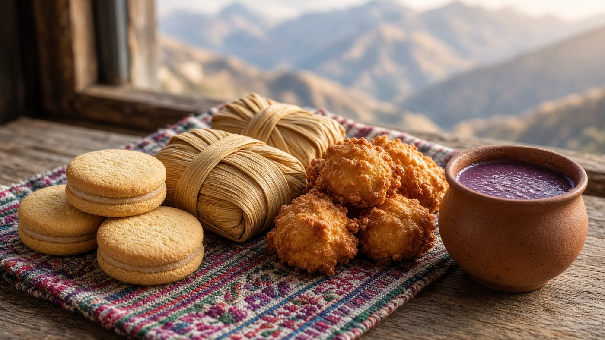
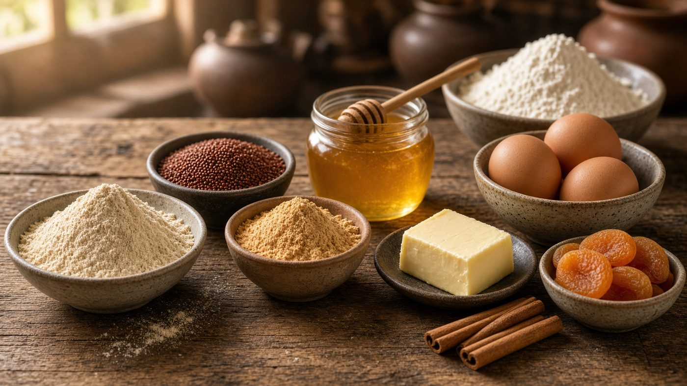
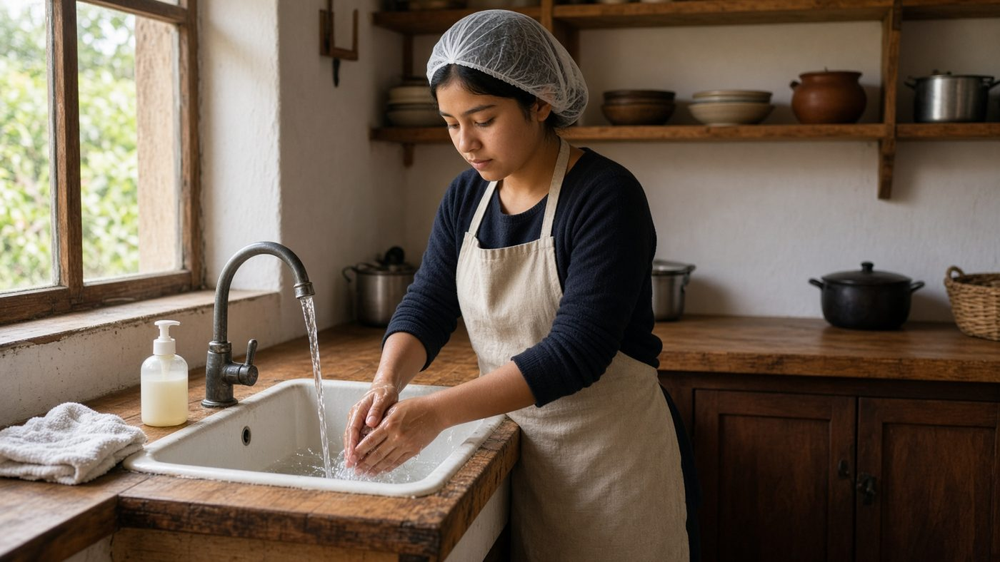
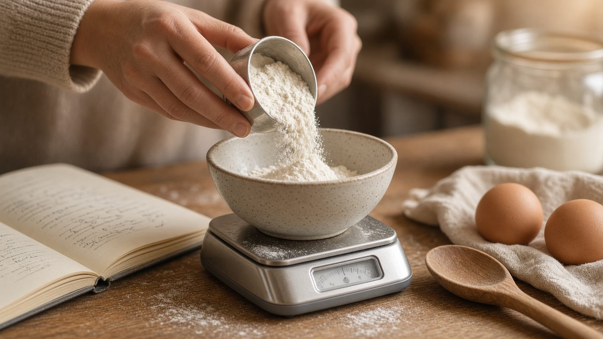
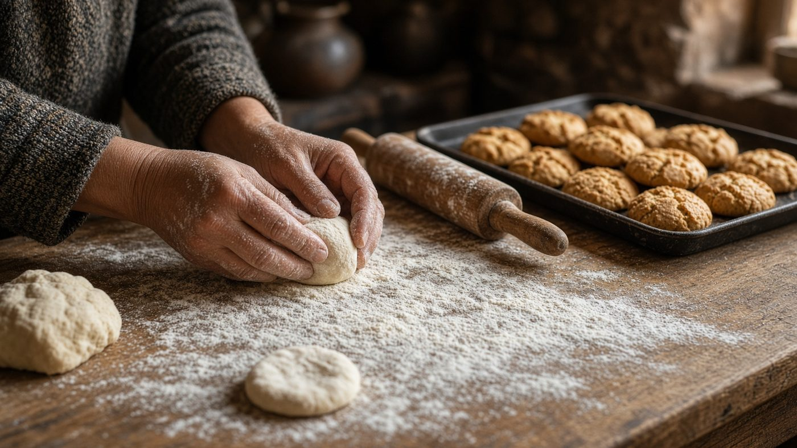
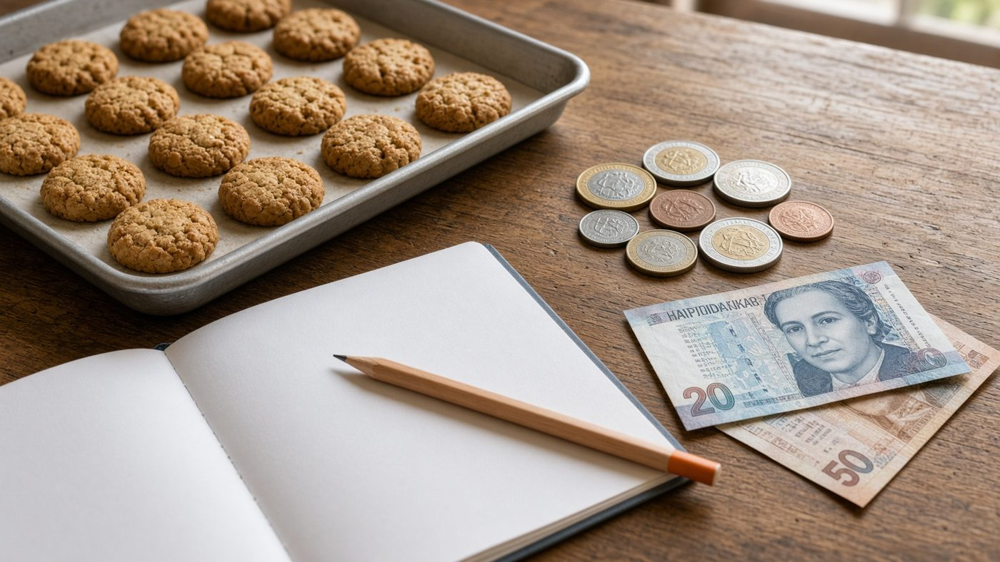
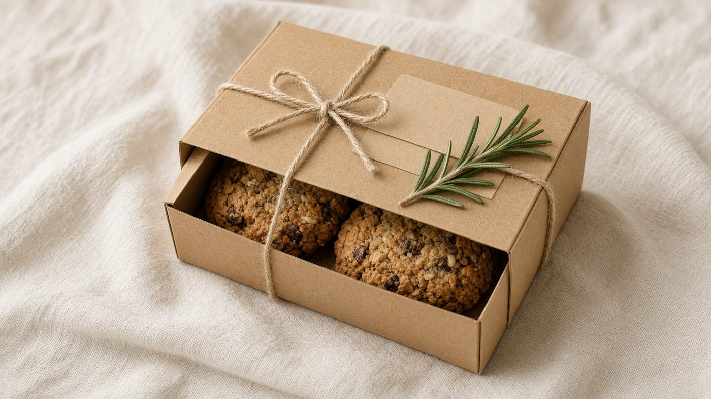
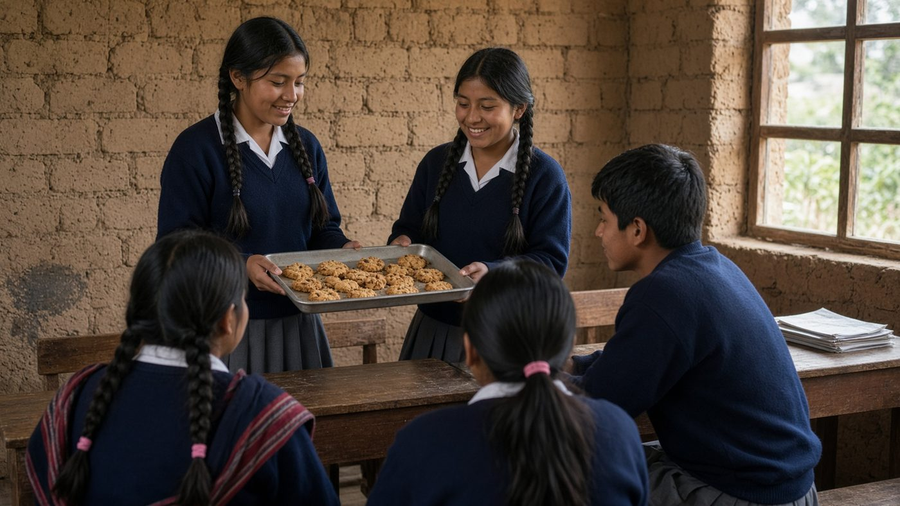

Módulo 1
Tradición repostera del Perú y de Puno
Dulces de la costa, la sierra y Puno: api, humitas, buñuelos y lo que se prepara en casa.
Sílabo · 8 módulos
Julma Gil Chambi
María Manueliz Peralta Machaca
Ocho sesiones para conocer la repostería del Perú y de Puno, preparar una receta artesanal y presentarla con precio, envase y mejora.

Dulces de la costa, la sierra y Puno: api, humitas, buñuelos y lo que se prepara en casa.

Quinua, kañiwa, miel, frutas y harinas de la zona: para qué sirven y cómo se eligen.

Manos limpias, cabello recogido y utensilios limpios. Preparar sin contaminar.

Pesar, medir y mezclar. Entender por qué una receta cambia si varía la cantidad.

Armar una receta propia, simple y repetible, con ingredientes que se consiguen en Puno.

Calcular cuánto sale cada porción y poner un precio que cubra ingredientes y trabajo.

Elegir nombre, envase y forma de mostrar el producto de manera clara y honesta.

Presentar la receta al aula, escuchar opiniones y ajustar lo que se puede mejorar.